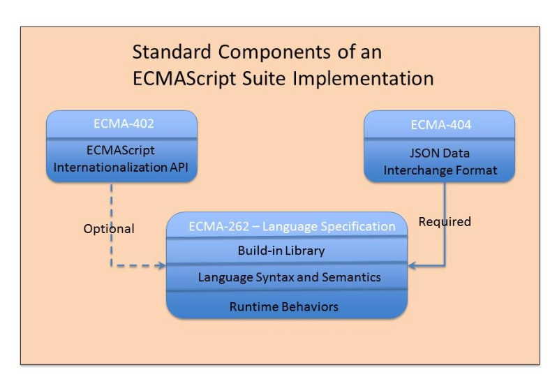

autoscale: true
ECMAScript Specification Suite
ECMAScriptの国際標準化
自己紹介

- Name : azu
- Twitter : @azu_re
- Website: Web scratch, JSer.info
ECMAScriptと国際標準
- デファクトスタンダード: 事実上の標準のこと
- ECMA-262("ECMAScript"と呼ばれるやつ)のこと。開発者はこっちを見る
- デジュールスタンダード(国際標準): ISO/IEC/ITUが標準化したもの
- ISO/IEC 16262のこと
- 政府調達などの要件に国際標準化されたものを利用することが多い
- 日本だと国際標準はJIS規格として翻訳されていることが多い
例: Unicode
- デファクトスタンダード: Unicode
- デジュールスタンダード: ISO/IEC 10646
- FAQ - Unicode and ISO 10646
ECMAScriptと国際標準
- デファクトスタンダード: Ecmaが決めるECMAScript
- Ecmaの決めた標準化プロセスで標準化
- 詳しくはECMAScriptの仕様策定に関するカンニングペーパー | Web Scratch
- デジュールスタンダード: ECMAScriptをISO/IECで国際標準化したもの
- ECMAScriptの場合は実際の中身はほぼ同じ
- ISO/IECの標準化プロセスで標準化
- 詳しくはSC22 ECMAScript Ad hoc委員会
国際標準
WTO/TBT協定
国家規格(法規)には、既に存在する国際標準を使うことを推奨する
WTO/GP協定
(政府およびその関連機関が調達する物品の)性能に関する技術仕様については、既にそれが存在する場合、国際標準に基づいていなければならない
国際標準とは?
WTOの協定で求められている「国際標準」とは、何なのでしょうか。実は、何も定義されていません。ISO(国際標準化機構)、IEC(国際電気標準会議)、およびITU(国際電気通信連合)の3つの国際組織が制定するものは、とりあえず「国際標準」と言ってよいであろうと、世界的に考えられています -- 標準化について | IPSJ/ITSCJ
ECMAScript Specification Suite
ECMAScript Specification Suiteとは
- ECMA-414 ECMAScript Specification Suite
- ECMAScript言語に関する仕様スイート
- 広義のECMAScriptはいくつかの仕様から構成される
- ECMAScriptの言語仕様、JSONの仕様、i18n APIの仕様など
- それぞれの仕様をコンポーネントと呼んでいる
ECMAScript Specification Suite
- 次のコンポーネントから構成される
- ECMA-262 - ECMAScript
- ECMA-402 - Internationalization API Specification
- ECMA-404 - JSON
- [Informative] TR-104 - ECMAScript Test Suite

ECMAScript Specification Suiteを3行で
- ECMAScriptプログラミング言語の仕様とその仕様に関する必須または任意の組み込みライブラリを含んだ仕様スイート
- この仕様スイートはECMA-262、ECMA-402、ECMA-404の最新のバージョンを参照する
- 2011年に策定されたISO/IEC 16262:2011を置き換えるものとして、ISO/IECによる国際標準化を行なうこととなった(まだ決まってない)
目的
- 年次の更新をしていくにあたり、毎年ISO標準も更新していくのは現実的でない
- ECMAScriptの仕様そのものは、デファクトスタンダードの最新版を常に参照する
- デファクトスタンダードを更新するたびに、ISO標準を毎回同期するのはコストが合わない
- 今のISO標準の代わりに、これをISO標準化(したい)
- ISO/IEC 16262:2011 => ISO/IEC DIS 22275(予定は未定)
ECMAScript Specification Suiteの国際標準化の効果
- 構成されるコンポーネントの最新版を参照する仕様スイート
- コンポーネントが追加または削除されない限り仕様スイートのバージョンは変化しない
- 例)
- ECMA-262が更新された場合、ECMAScript Specification Suite自体は更新されない
- コンポーネントにECMA-XXXが追加された場合、ECMAScript Specification Suiteは更新される
- コンポーネントからECMA-404が削除された場合、ECMAScript Specification Suiteは更新される
ISO/IEC DIS 22275
- 国際標準もRapid Releaseに対応させるDRYな仕様
- 国際標準はデファクトスタンダード(ECMAScript)を参照するという仕様
- :warning: この国際標準はまだ審議中なので未確定な内容です
まとめ
- ECMAScript(Ecma)は新しい国際標準の形を模索してる
- 背景にWeb標準の高速化がある = Living Standards化
- 本当の最新版は常にtc39/ecma262にある
- 一年ごとに出しているECMAScript 201Xもスナップショットにすぎない